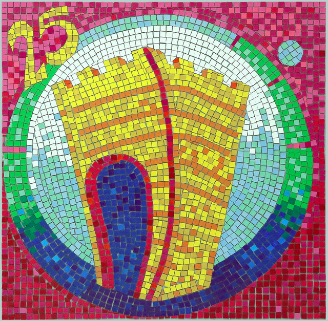

1. Autoría
| Título | ¡Si lo se hago puré! |
|---|---|
| Descripción | Situación de Aprendizaje elaborada para trabajar con el alumnado de 1º de ESO con la que desarrollamos el bloque de fracciones: situaciones en las que se presentan, operaciones y resolución de problemas sencillos, enfocando el trabajo en un proyecto en el que se sentirán identificados, como puede ser el de modificar una receta y organizar una lista de la compra en función del artículo que se desea comprar y el número de comensales (de esta forma seguiremos relacionando nuestro trabajo con el consumo responsable): éste será el producto final de esta Situación de Aprendizaje. |
| Persona elaboradora de contenido | Antonio Romero Luque |
| Contenido basado en el libro: | Matemáticas 1º de ESO Proyecto Construyendo mundos Grazalema Santillana |
| Persona de soporte técnico | Pedro Alcedo Jiménez |
| Licencia | Licencia Creative Commons Reconocimiento No comercial Compartir igual 4.0 |
Este contenido fue creado con eXeLearning, el editor libre y de fuente abierta diseñado para crear recursos educativos.
